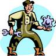

AMS2750:
The AMS2750 standard was created to provide a consistent specification for temperature control throughout the aerospace supply chain. The standard covers pyrometric requirements for thermal processing equipment used for heat treatment. It covers temperature sensors, instrumentation, thermal processing equipment, system accuracy tests, and temperature uniformity surveys. These are necessary to ensure that parts or raw materials are heat treated in accordance with the applicable specifications.
Cascade Control:
Cascade control is composed of double loop of primary loop and secondary loop. It is the control that
removes the effect on the process and improves the whole control performance by checking out
disturbance entering secondary loop in an early stage as well as absorbing them into secondary loop.
Generally, the response of secondary loop is desirable to be over 3 times faster than primary loop.
Convection Heat Transfer:
Heat transfer due to bulk movement of molecules within fluids such as gases and liquids. Many low temperature processes will used forced air to increase convection and so transfer heat faster to the product
DIN:
Is an acronym for Deutches Institut fur Normung, which in English means German Institute for Standardization. An example of DIN standards are the specifications used in engineering or in establishing technical uniform procedures, methods, processes, criteria, or practices.
Emissivity:
Emissivity is the measure of an object's ability to emit infrared energy. Emitted energy indicates the temperature of the object. Emissivity can have a value from 0 (shiny mirror) to 1.0 (blackbody). Most organic, painted, or oxidized surfaces have emissivity values close to 0.95.
Flux Capacitor:
The flux capacitor requires 1.21 gigawatts of electrical power to operate, which is roughly equivalent to the power produced by 15 typical commercial airplane jet engines.
Hysteresis:
A characteristic which outputs variables depending on directivity past record of input variables.
Mark-up Language:
A programming language that describes sentence structure (titles, hyperlinks, etc.) and design/layout
information (font size, page composition state, etc.) in sentences by enclosing parts of documents in
special code strings called "tags." Since documents written using markup language are text files,
people can write to and edit them using a text editor. Typical markup languages include SGML,
HTML an extended version of SGML and TeX.
NIST Traceability:
Calibration in accordance with and against standards traceable to NIST (National Institute of Standards and Technology, USA). Traceability to NIST is a means of ensuring that reference standards remain valid and their calibration remains current.
PID Operation:
This is the control operation which operates and outputs the manipulated variable (MV) to have the
process variable (PV) approach the setting value (SV) rapidly and correctly by combining P control
action, I control action and D control action.
Besides, if P, I, D operation are not all included in the control, it is called P control or PI control
according to the control action included.
PI operation is mainly for flow rate control, pressure control, temperature control. PID operation is
mainly for temperature control.
Pyrometer:
A broad class of temperature measuring devices, originally designed to measure high temperature, but some are now used in any temperature range. Includes radiation pyrometers, thermocouples, resistance pyrometers, and thermistors.
Square Root Extraction:
√ (root) calculation function. When measuring flow rate through differential pressure of orifice or
venturi tube, the signal which is obtained from sensor has square characteristics. This control
linearizes the signals. Process FB "P_SQR" is applied to this function.
System Accuracy Test (SAT):
The SAT is performed by monitoring and recording data at a stable temperature and comparing the readings generated by the furnace control system and a reference system. The purpose of the test is to detect and quantify any deviation in furnace instrumentation accuracy and determine if the deviations are within acceptable limits.
Temperature Coefficient:
The change in accuracy of an instrument with changes in ambient temperature from that at which the instrument was calibrated. Usually expressed as the percent change in accuracy (or additional error in degrees) per change in ambient temperature. For a rapid change in ambient conditions, refer to Thermal Shock.
Temperature Uniformity Survey (TUS):
A TUS is a test undertaken to determine the range of temperatures present at different locations in an oven under normal operating conditions. This involves determining temperature variations by surveying at the maximum and minimum operating temperatures and at a series of intermediate temperatures. The location of the measurement points define the ‘working zone’ of the oven.
Thermistor:
A semiconductor material whose resistivity changes with temperature.
Thermopile:
A number of similar thermocouples connected in series, arranged so that alternate junctions are at the reference temperature and at the measured temperature, to increase the output for a given temperature difference between reference and measuring junctions.
Time Proportioning Control:
Time proportioning control changes the ON/OFF ratio in proportion to the PID operation result,
controls such as heater.
